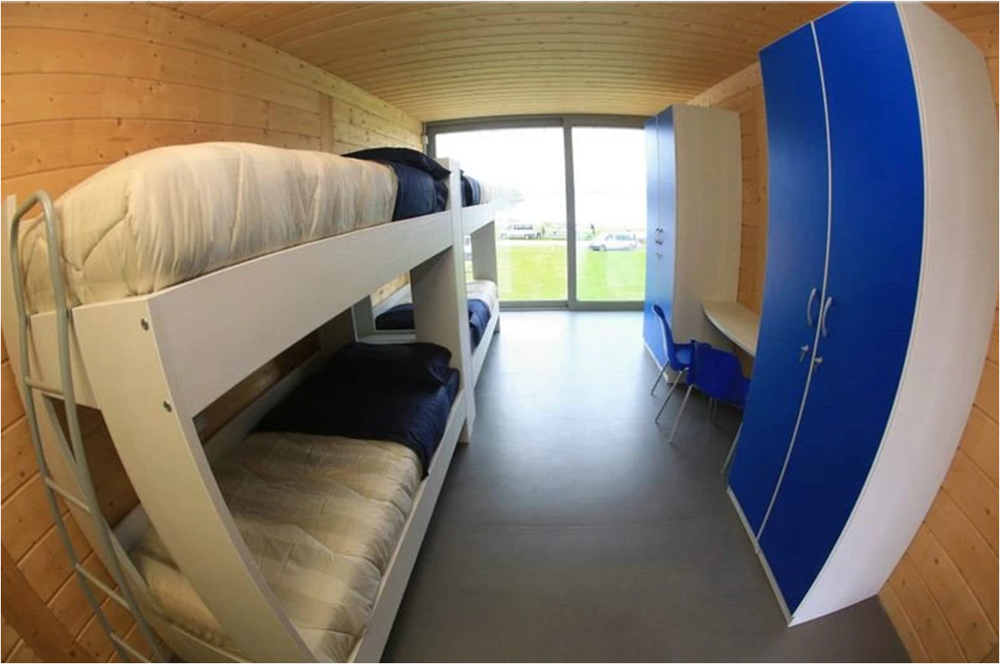
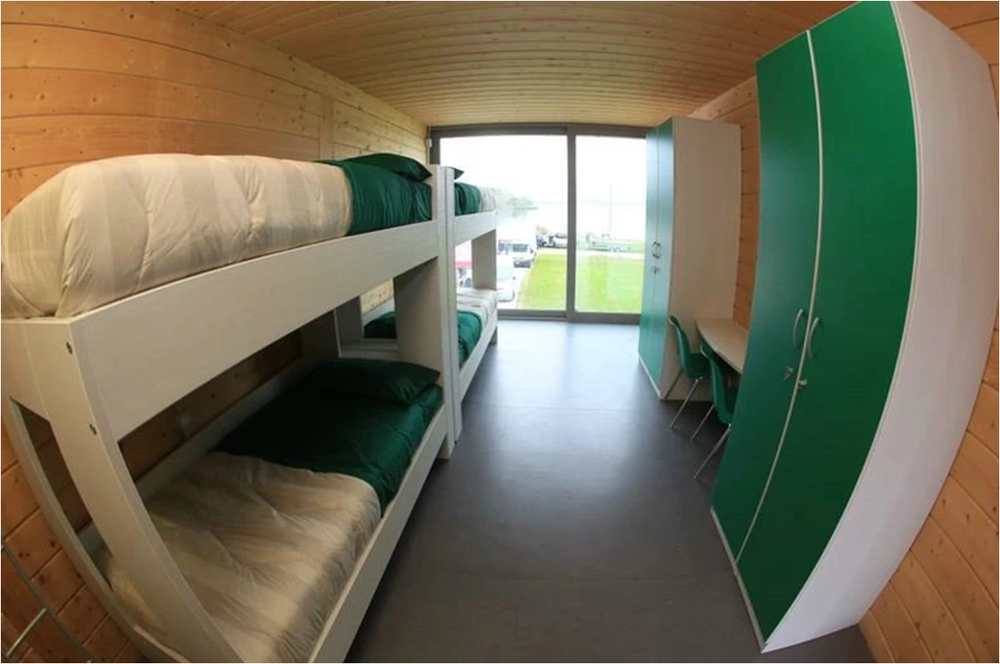
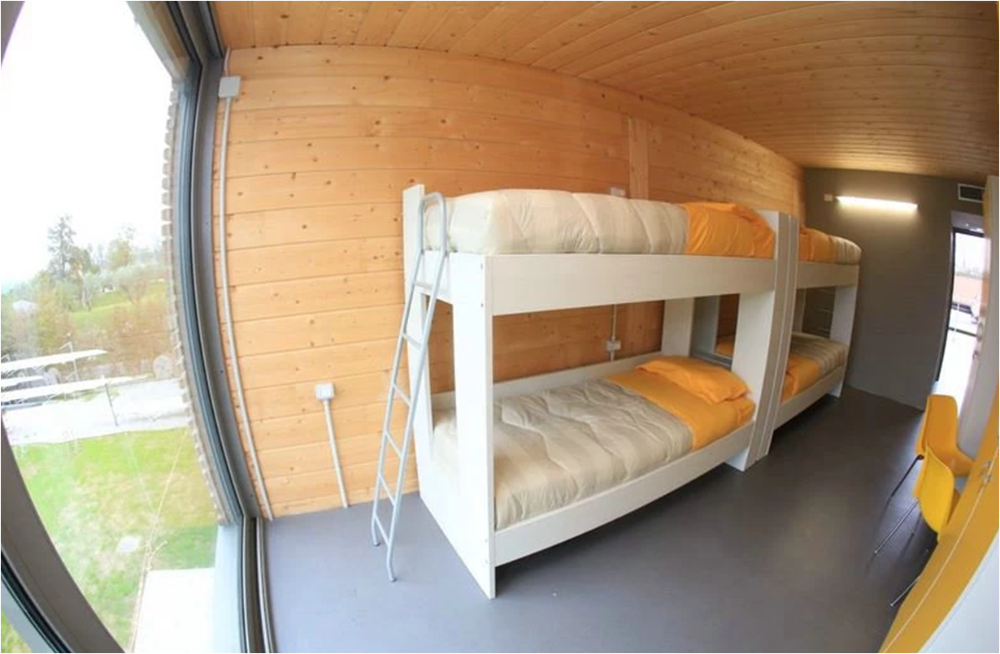
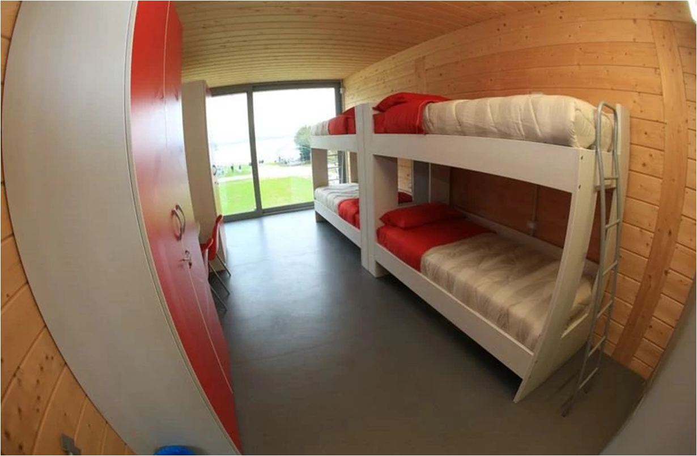
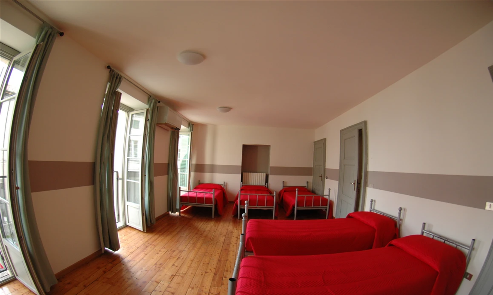
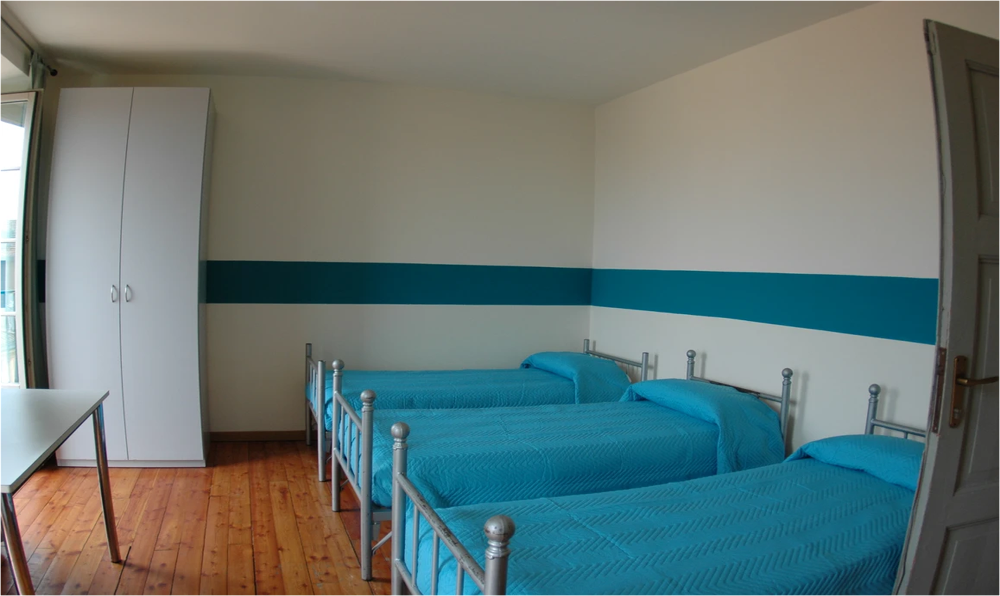
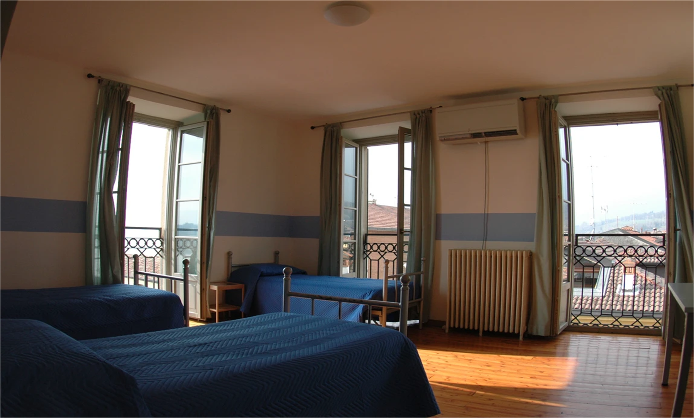
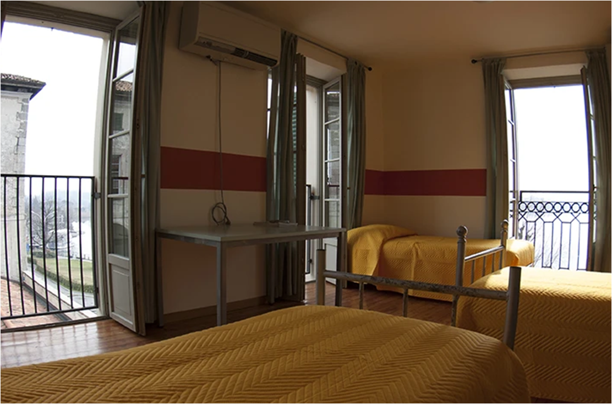

Foresteria
home
chi siamo
storia
il consiglio
i soci
contatti
Club house
zona relax
palestre
aula didattica
infermeria
foresteria
centro Remiero
pusiano-palazzo beauharnais
boathouse
hangar barche
centro estivo
il centro dell'estate
canottaggio
sezioni
attività con le scuole
corsi canottaggio
regate
regate nazionali
regate regionali
rowing winter challeng
Abbiamo attualmente due Foresterie per 38 posti letto
Primo Piano Centro Remiero, di 4 camere da 4 letti ognuna
   
A Pusiano a soli 2 km dal centro, raggiungibile anche in bicicletta, da 22 letti, di prossima espansione a 34
   